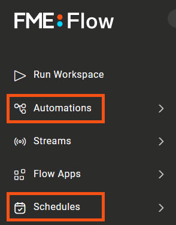
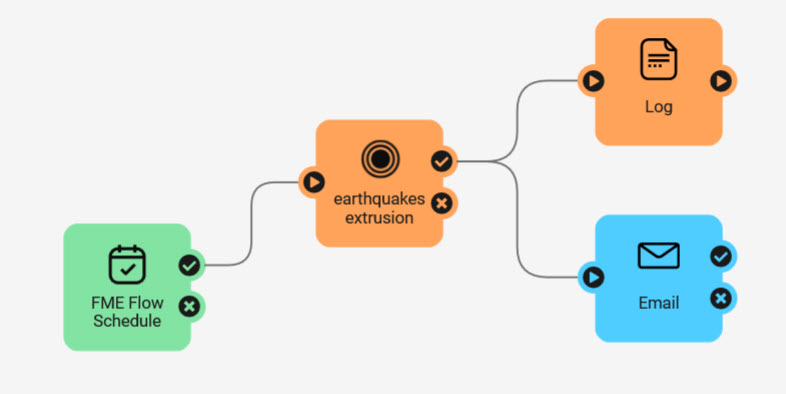
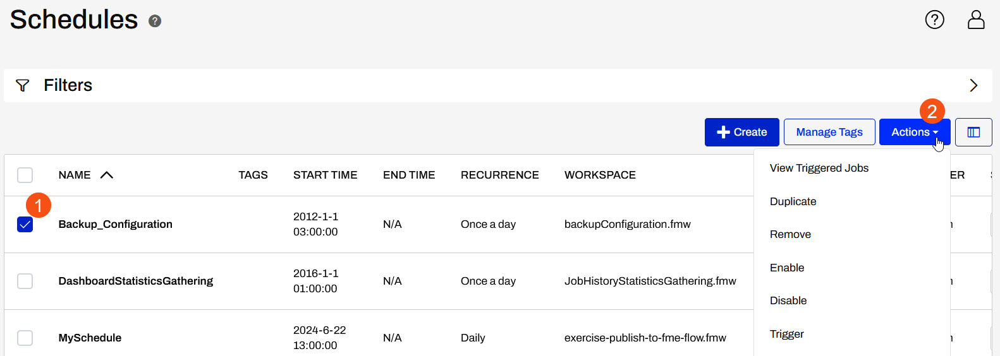
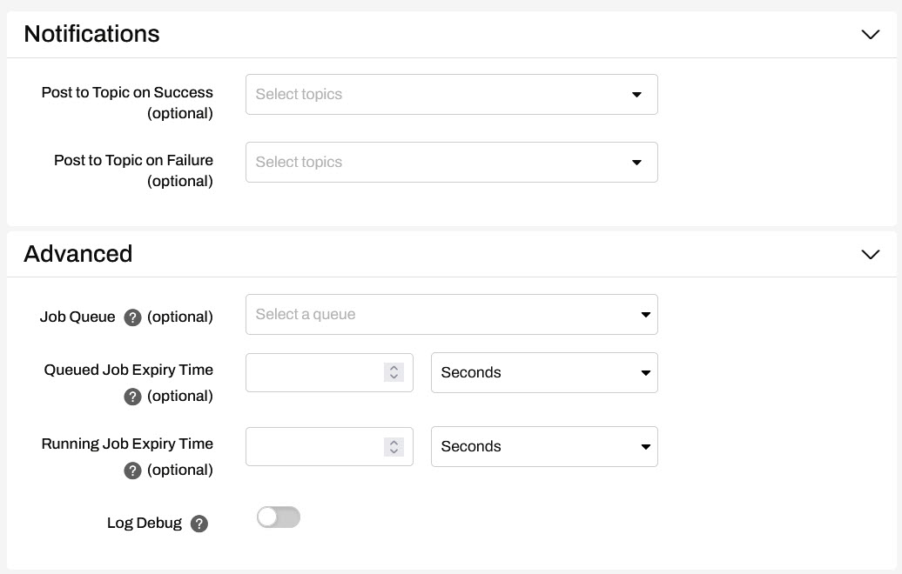
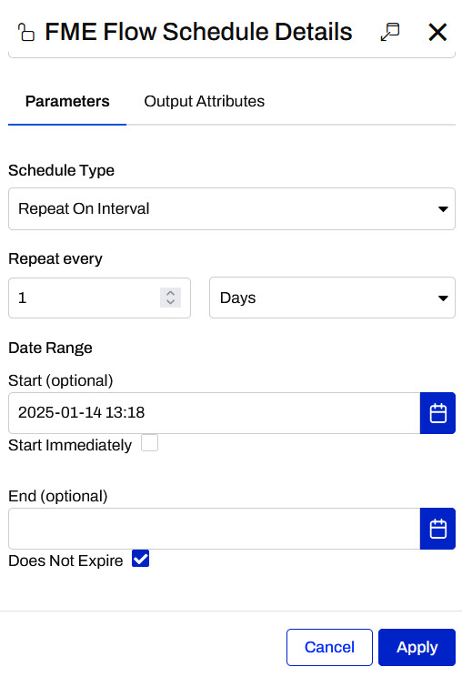
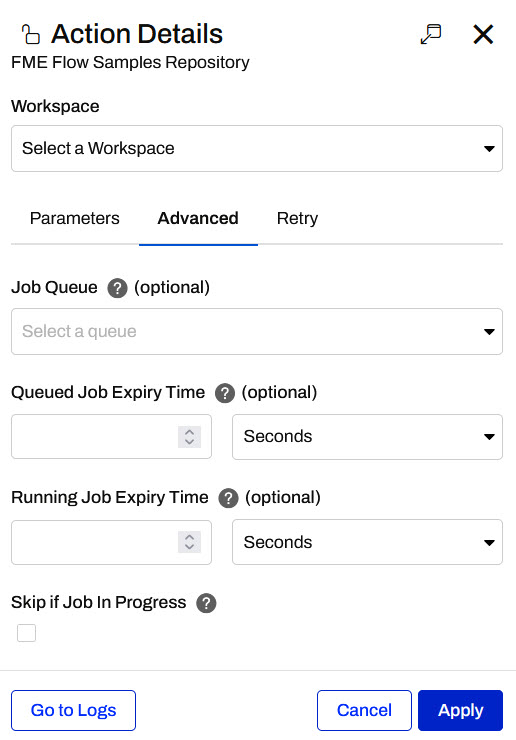

After completing this lesson, you’ll be able to:
Scheduling is the ability to configure FME Flow to run a workspace in a repository at a specific time in the future. The schedule can trigger the workspace(s) to run once or on a repeating basis.
There are two options for setting up scheduled tasks in FME Flow - through Schedules or Automations.

In Schedules, you can set recurring tasks to run a single workspace for each.
In Automations, a Schedule trigger can be used to run a single workspace similar to schedules or be extended to trigger multiple workspaces and kick off external actions too.

There are 3 different schedule types that can be accessed for both Automations and Schedules:
The Schedules interface is accessed by clicking Manage Schedules within the Schedules menu. Schedules can be selected and you can quickly trigger, enable, duplicate, and disable scheduled tasks.

The Filter feature lets the user also see which automations are running on a schedule by changing the Source.
You can set several parameters when creating a scheduled task.
The first group of parameters includes options for naming and describing the schedule and setting up the actual schedule. Here, the user has set the workspace to run once a day starting on the 22nd of June at 2:00 PM (14:00).
The parameter labelled Skip if Job in Progress provides the ability to prevent the next scheduled run of a job from being submitted if the previous run is still incomplete.
The next few parameters configure how the workspace is to run. Once a workspace is selected, FME Flow will then expose any published parameters that exist in the workspace.
If you scroll to the bottom, you will find Notifications and Advanced expandable sections. The Notifications are used to post to a previously configured Topic and the Advanced options allow you to select a Job Queue and set Job Expiry Times.

Once the parameters are set for a scheduled task, it is added to the main Schedules interface, where it can be easily enabled or disabled.
An FME Flow Schedule trigger in an Automation provides almost the same schedule configuration options as a Schedule task.

The Notifications and Advanced configuration options are configured from the Run a Workspace action instead of from the Schedule trigger details.

While it may seem like a slight disadvantage to configure two actions in an Automation compared to the simple Create Schedule form, you gain a greater flexibility in processing options downstream of the Schedule trigger in an Automation. After an Automation is triggered, you are able to control data flow between multiple workspaces and external actions. This allows you to maximize the full potential of FME Flow, rather than running a single workspace.